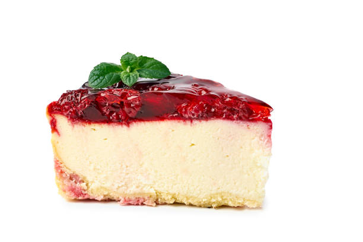

home
Cheese cake

Preparation:20 min. Servings: 8
Ingredients
- 16 ounces cream cheese
- 1 cup milk
- 1 cup white sugar
- 2 tablespoons cornstarch
- 1 teaspoon vanilla extract
- 4 eggs
- ½ teaspoon ground cinnamon, or to taste
Preparation
- Preheat oven to 350 degrees F (175 degrees C). Grease one 8x8 inch square pan.
- Place the cream cheese, milk, sugar, corn starch and vanilla in a blender and puree. Add the eggs one at a time after the last egg has been added blend mixture for 7 minutes. Pour batter into the prepared pan and sprinkle top with cinnamon.
- Bake at 350 degrees F (175 degrees C) for 1 hour. Let cheese cake cool in oven for one hour. Then place in the refrigerator for at least 3 to 4 hours before serving.